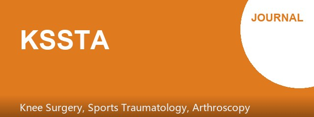
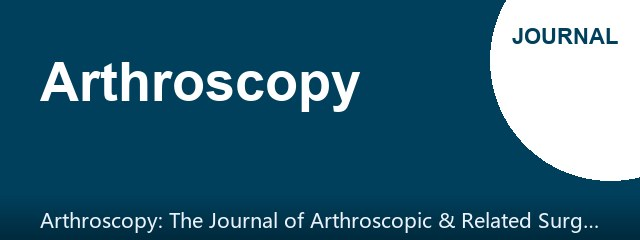
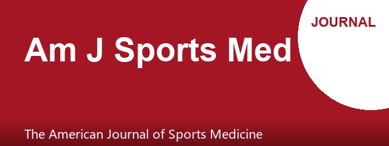

SPORTS MEDICINE & ARTHROSCOPY DIGEST
髋关节镜股骨头软骨损伤：10年生存率更低但PROMs相当
第 23 期 · 2026-10-29
10月28日 10 本核心期刊新收录 21 篇 → 精选 14 篇（剔除编辑评论/来信）
本期主打一项髋关节镜长期随访研究：股骨头软骨损伤（Outerbridge≥2级）虽不影响10年患者报告结局，却显著降低假体生存率，提示术中软骨评估对预后分层与随访策略具有实际价值。非运动员FAI的RCT显示盂唇修复仅在术后3-6个月功能占优，12个月时与清理术趋同，且手术时间更长，为个体化选择提供依据。此外，足球锋线球员劳力性热射病防控、重复头撞击与白质微结构改变、以及PEMF缓解DOMS的随机对照证据，均值得运动医学与运动防护团队关注。
▍今日主打 · TODAY’S FOCUS
回顾性队列 · 倾向性匹配 · III级证据 · 188例 · 随访≥10年 · Retrospective Cohort · Propensity-Matched · Level III · 188 Patients · ≥10-Year Follow-Up
髋关节镜股骨头软骨损伤：10年生存率更低但PROMs相当
Femoral Head Osteochondral Lesions Predict Lower Survivorship but Not Inferior Patient-Reported Outcomes After Hip Arthroscopy at a Minimum 10-Year Follow-Up.
Arthroscopy · 2026-10-28 · 回顾性队列（倾向性匹配） · PMID 42949407
一句话结论：在至少10年随访的髋关节镜患者中，股骨头软骨损伤（Outerbridge≥2级）与无损伤对照组相比患者报告结局改善相当，但假体生存率显著更低，提示软骨损伤是翻修/置换的预测因素而非功能结局的决定因素。
要点：188例（每组94例）经年龄、性别、BMI、LCEA、盂唇处理、关节囊管理、髋臼Outerbridge及随访时间1:1匹配。两组末次随访所有PROMs均较术前显著改善（P<.01）并达到MCID；但股骨头损伤组假体生存率更低，是转为关节置换的预测因素。
对临床的启示：该研究提示，髋关节镜术中发现的股骨头软骨损伤不应作为放弃手术的绝对理由，因其功能改善仍可期；但应作为术后随访强度与患者预期管理的重要分层因素，尤其需警惕远期置换风险。结合本期非运动员FAI的RCT，盂唇修复的早期优势在12个月时消失，提示对低活动量患者应权衡手术时间与早期获益。局限在于回顾性设计、样本量有限、软骨损伤分级依赖术中评估，且未报告具体生存率数值与置换率，需前瞻性研究验证。
Conclusion: Femoral head osteochondral lesions (Outerbridge grade ≥2) were associated with comparable patient-reported outcome improvements but significantly lower survivorship after hip arthroscopy at a minimum 10-year follow-up, identifying them as a predictor of conversion to arthroplasty rather than a determinant of inferior functional outcomes.
Key points: In 188 propensity-matched patients (94 per group), both groups achieved significant improvements in all patient-reported outcomes (P<.01) and met minimal clinically important thresholds; however, the femoral head lesion group demonstrated lower survivorship, identifying osteochondral damage as a predictor of arthroplasty conversion.
Clinical implications: Intraoperative femoral head cartilage lesions should not be an absolute contraindication to hip arthroscopy, as functional improvement remains achievable; however, they should inform postoperative surveillance intensity and patient expectation management, particularly regarding long-term arthroplasty risk. Combined with the RCT of non-athletic FAI patients showing that labral repair's early advantage disappears by 12 months, these findings support individualized decision-making balancing operative time against early benefit. Limitations include retrospective design, limited sample size, intraoperative grading, and unreported absolute survivorship and conversion rates, warranting prospective validation.
原文 / Source：https://doi.org/10.1002/arj.70627
▍其余 13 篇 · 一屏看完

[膝关节] 髌腱慢性病术后延迟重返运动：手术效应还是负荷耐受信号？
Delayed return to sport after fat pad debridement: A surgical effect or a load-tolerance signal?
Knee Surg Sports Traumatol Arthrosc · PMID 42949220
摘要：致编辑信回应Jolly等Meta分析，认为脂肪垫清理术后重返运动延迟不应完全归因于手术，脂肪垫病变可能是前膝痛更易激惹表型的标志，重返运动取决于重建肌腱负荷耐受而非单一时间节点。
This letter responds to the meta-analysis by Jolly et al., arguing that delayed return to sport after fat pad debridement should not be attributed solely to surgery; fat pad pathology may mark a more irritable anterior knee pain phenotype, and return to sport depends on rebuilding tendon load tolerance rather than a single chronological milestone.
原文：https://doi.org/10.1002/ksa.70663
· · · · ·

[肩关节] 翻修肩袖修复：真皮同种异体补片增强缺乏疗效证据
Lack of Evidence for Improved Outcomes With Dermal Allograft Augmentation of Revision Arthroscopic Rotator Cuff Repair: A Systematic Review.
Arthroscopy · PMID 42949190
摘要：系统综述纳入27项研究（28个队列，1244肩），其中6个队列（136肩）使用真皮补片增强。翻修肩袖修复后ASES评分66-86.8，增强组77-86，Constant、SANE及前屈活动度组间相似，现有低级别证据未显示增强的额外获益。
Systematic review of 27 studies (28 cohorts, 1244 shoulders), including 6 cohorts (136 shoulders) with dermal allograft augmentation. ASES scores ranged 66-86.8 after isolated revision and 77-86 with augmentation; Constant, SANE, and forward flexion were similar, with no evidence of added benefit from augmentation in the available low-level literature.
原文：https://doi.org/10.1002/arj.70650
· · · · ·
[髋关节] 非运动员FAI：盂唇修复早期功能占优但12个月趋同
Arthroscopic labral repair versus debridement in non-athletic patients with femoroacetabular impingement: A prospective randomized study.
Knee Surg Sports Traumatol Arthrosc · PMID 42949177
摘要：60例非运动员FAI随机行盂唇修复或清理。修复组术后3、6个月HHS和HOS-ADL更优（p≤0.021），12个月时HHS（93.2 vs 90.0）、HOS-ADL（90.0% vs 86.6%）和VAS（1.6 vs 2.0）无显著差异；修复组手术时间更长（119.3 vs 99.7 min）。
Sixty non-athletic FAI patients were randomized to labral repair or debridement. Repair yielded superior HHS and HOS-ADL at 3 and 6 months (p≤0.021), but by 12 months HHS (93.2 vs 90.0), HOS-ADL (90.0% vs 86.6%), and VAS (1.6 vs 2.0) converged; operative time was longer for repair (119.3 vs 99.7 min).
原文：https://doi.org/10.1002/ksa.70661
· · · · ·
[膝关节] ACL损伤中胫骨平台后外侧骨折的功能意义再思考
Rethinking the functional relevance of posterolateral tibial plateau fractures in anterior cruciate ligament injury.
Knee Surg Sports Traumatol Arthrosc · PMID 42949176
摘要：评论认为Willinger等的前瞻性研究将胫骨平台后外侧骨折视为均一病变，但小皮质凹陷与深部塌陷的生物力学意义不同；术前轴移试验受多因素影响，仅能得出骨折存在本身并非更大轴移松弛的可靠替代指标。
This commentary argues that Willinger et al. analyzed posterolateral tibial plateau fractures as a uniform lesion despite morphologic heterogeneity; small cortical impressions differ biomechanically from deep depression defects. Preoperative pivot shift is a multifactorial surrogate, supporting only a narrow conclusion that fracture presence alone is not a reliable marker of greater laxity.
原文：https://doi.org/10.1002/ksa.70662
· · · · ·
[运动防护] NCAA一级运动员睡眠延长可行性：睡眠一致性显著提升
Enhancing Sleep in NCAA Division I Athletes: A Study of Sleep Extension Feasibility.
Sports Health · PMID 42949008
摘要：50名NCAA一级运动员（女14、男36）在休赛期使用WHOOP手环，先基线2周再指导延长睡眠至每晚10小时2周。睡眠一致性从基线60.09±12.6%显著提高，提示睡眠延长在更广泛队列中可行。
Fifty NCAA Division I athletes (14 female, 36 male) wore WHOOP bands during a 2-week baseline followed by 2 weeks of instructed sleep extension to 10 hours per night in the offseason. Sleep consistency increased significantly from baseline 60.09±12.6%, supporting feasibility of sleep extension in a broader cohort.
原文：https://doi.org/10.1177/19417381261496986
· · · · ·
[运动防护] NATA工作组：美式橄榄球锋线球员劳力性热射病预防20条建议
A NATA Task Force: Preventing Exertional Heat Stroke Death in American Football Linemen.
Sports Health · PMID 42948998
摘要：锋线球员占大学和中学美式橄榄球劳力性热射病死亡90%以上。Delphi共识形成20条建议，包括教练教育、热习服方案、基于天气的运动调整，以及避免高温时段高强度有氧测试。
Linemen account for over 90% of exertional heat stroke deaths in collegiate and secondary school American football. A Delphi consensus produced 20 recommendations, including coach education, heat acclimatization protocols, weather-based exercise modification, and avoidance of high-intensity aerobic testing during high heat.
原文：https://doi.org/10.1177/19417381261486272
· · · · ·
[肘腕手] 腕部隐匿性骨应力损伤与维生素D缺乏：7例病例系列
Occult Skeletal Stress Injuries of the Wrist and Vitamin D Deficiency: A Case Series.
Sports Health · PMID 42948993
摘要：7例慢性无外伤性腕痛患者MRI示腕骨应力反应，均伴维生素D水平低下；经靶向维生素D补充和营养管理后症状改善，无一需手术。提示腕部应力损伤易漏诊，需关注代谢因素。
Seven patients with chronic atraumatic wrist pain showed MRI carpal stress reactions and documented low vitamin D levels; all improved with targeted vitamin D supplementation and nutritional management without surgery, highlighting the need to recognize these injuries and underlying metabolic abnormalities.
原文：https://doi.org/10.1177/19417381261497066
· · · · ·
[膝关节] 内侧半月板后根撕裂：双套索缝线经胫骨隧道修复技术
Arthroscopic Repair of Medial Meniscus Posterior Root Tear: Transtibial Fixation With 2 Lasso-Loop Sutures and 1 Samsung Medical Center Sliding Knot for Tensioning Secured by a Tibial Button.
Arthrosc Tech · PMID 42948762
摘要：技术报告介绍经单胫骨隧道使用2根套索缝线和1个SMC滑结、胫骨皮质纽扣固定的关节镜下内侧半月板后根修复术，强调可控解剖复位和半月板-缝线界面均衡张力，减少缝线松动或切割。
This technical note describes arthroscopic medial meniscus posterior root repair using 2 lasso-loop sutures and 1 Samsung Medical Center sliding knot through a single transtibial tunnel secured by a tibial cortical button, emphasizing controlled anatomic reduction and balanced tensioning to minimize suture loosening or cut-through.
原文：https://doi.org/10.1002/atn2.70369
· · · · ·
[踝足] 跟骨前突撕脱骨折合并分歧韧带损伤：关节镜缝线带增强技术
Arthroscopic Technique for Anterior Calcaneal Process Avulsion Fractures and Bifurcate Ligament Injuries Using Suture Tape Augmentation.
Arthrosc Tech · PMID 42948450
摘要：技术报告描述关节镜下处理跟骨前突撕脱骨折合并分歧韧带损伤：切除症状性关节内骨块，并用缝线带对分歧韧带双束行内支撑增强，保留残余原生纤维，恢复跟骰关节稳定性，避免开放手术并发症。
This technique combines endoscopic excision of symptomatic intra-articular fragments with internal brace augmentation of both limbs of the bifurcate ligament using suture tape, preserving residual native fibers and restoring calcaneocuboid stability while avoiding the morbidity of open surgery and rigid across-joint fixation.
原文：https://doi.org/10.1002/atn2.70330
· · · · ·
[踝足] 下胫腓联合损伤：关节镜辅助可调渐进加压固定技术
Arthroscopic-Assisted Adjustable Progressive Compression Fixation for Distal Tibiofibular Syndesmosis Injury.
Arthrosc Tech · PMID 42947981
摘要：技术报告介绍关节镜辅助可调渐进加压固定：旋转腓侧EndoButton使4股高强缝线同步扭转缩短，实现下胫腓联合持续可控横向加压，术中可依据触觉、关节镜和透视实时调整张力，兼顾稳定与微动。
This technique achieves continuous, controllable transverse compression of the distal tibiofibular syndesmosis by rotating a fibular-side EndoButton to twist and shorten 4-strand high-tensile sutures, allowing real-time tension adjustment under tactile feedback, arthroscopic visualization, and fluoroscopy to balance stability and micromotion.
原文：https://doi.org/10.1002/atn2.70336
· · · · ·
[运动医学] 脉冲电磁场缓解DOMS：随机假对照试验显示疼痛与CK改善
Effect of Pulsed Electromagnetic Stimulation on Delayed Onset Muscle Soreness: Randomized Sham-Controlled Trial.
Sports Health · PMID 42934881
摘要：52名久坐大学生在drop-jump诱导DOMS后24小时起接受3天PEMF或假治疗。实验组疼痛、压痛阈、功能表现、血清CK和Mb均改善（P<0.05），提示PEMF可加速DOMS恢复，但肌力未提高。
Fifty-two sedentary students received 3 days of active or sham PEMF starting 24 hours after drop-jump-induced DOMS. The experimental group improved in pain, pressure pain threshold, functional performance, serum CK, and myoglobin (P<0.05), suggesting PEMF accelerates DOMS recovery without increasing muscle force.
原文：https://doi.org/10.1177/19417381261494825
· · · · ·
[运动防护] 重复头撞击或损害美式橄榄球运动员白质完整性与双手协调
Repeated Head Impacts May Compromise White Matter Integrity and Bimanual Coordination in American Football Players.
Sports Health · PMID 42934870
摘要：22名大学橄榄球运动员和13名非接触对照行赛季前DTI。接触运动员16条纤维束中15条FA更高、10条MD更低；高暴露者赛季内扩散指标变化更大、双手协调更差、症状负担更重，提示重复头撞击的亚临床影响。
Twenty-two varsity football players and 13 noncontact controls underwent preseason DTI. Contact athletes showed higher FA in 15 of 16 tracts and lower MD in 10 tracts; high-exposure athletes had greater within-season diffusion change, worse bimanual coordination, and greater symptom burden, suggesting subclinical effects of repetitive head impacts.
原文：https://doi.org/10.1177/19417381261494495
· · · · ·

[膝关节] LET股骨固定点与屈膝角度不影响ACL移植物张力及胫股运动
Varying Lateral Extra-articular Tenodesis Femoral Fixation Points and Fixation Flexion Angles Do Not Affect ACL Graft Force and Tibiofemoral Motion After ACL Reconstruction.
Am J Sports Med · PMID 42934217
摘要：10例新鲜冰冻尸体膝在6种条件下测试，LET股骨固定点取ALL止点或远端Kaplan纤维止点、固定角度30°或60°，结果显示各条件下ACL移植物张力与胫股运动无显著差异，提示固定点与角度选择具有灵活性。
Ten fresh-frozen cadaveric knees were tested under 6 conditions with LET femoral fixation at the ALL insertion or distal Kaplan fibers, fixed at 30° or 60°. No significant differences in ACL graft force or tibiofemoral motion were found, suggesting flexibility in fixation point and angle selection.
原文：https://doi.org/10.1177/03635465261491029
· · · · ·
💬 一起聊聊：您在髋关节镜术中遇到股骨头软骨损伤时，会如何调整随访策略与患者预期？欢迎留言分享。
本内容由 AI 辅助整理，仅供学术交流参考，观点与数据请以原文为准，不构成诊疗建议。文献题录与摘要来源：PubMed。
— 运动医学 · 关节镜文献速览 · 第 23 期 —